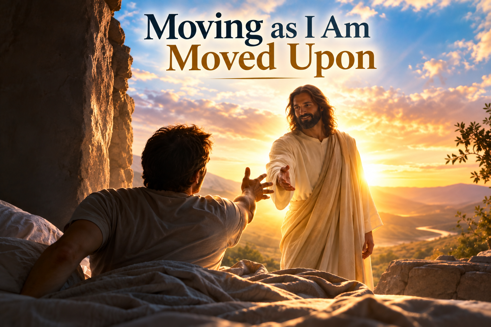

Jesus-Greg WORLD · Daily Opera
Being Wrought Upon and the Gift of Tongues
Night dreams, the Womb/Tomb Scene, waking in Christ, and learning to leave room for the Spirit.
I keep coming back to an old scriptural phrase:
Wrought is a powerful word. It means worked upon, shaped, acted upon, changed.
And I am beginning to see that phrase as one of the main interpretive keys to my entire daily opera.
Scene One: Womb/Tomb
The first scene is the Womb/Tomb Scene.
I am dead—or approximately dead: asleep, motionless, largely unconscious of the room around me.
And then I come alive.
I awake.
That scene both enacts AND SIGNALS one of the major themes of the entire opera.
My whole ordinary Groundhog Day is being redeemed, reengineered, and imagineered as an opera.
Why?
Because I believe I am being wrought upon.
Columbus believed the Spirit wrought upon him to seek a new route to the Indies.
I am not being wrought upon to find a new route to India.
A new way to wake.
A new way to travel.
A new way to work.
A new way to speak.
A new way to think.
A new way to eat.
A new way to rest.
A new way to sing.
A new way to inhabit an ordinary human body during an ordinary human day.
An Exodus, for sure.
The geography isn't primarily across an ocean.
But the Scene Actually Begins the Night Before
There is something important I almost missed.
The Womb/Tomb Scene doesn't really begin when my eyes open.
It begins hours earlier.
And I have begun wondering whether Jesus has given me night dreams, among their many possible purposes, to provide an unmistakable and extraordinarily lengthy recurring approximation of what it feels like to be wrought upon.
Because shortly before I am wrought upon to awaken, I have spent hours experiencing something astonishing.
I have been wrought upon by dreams.
Wrought upon almost in the maximum sense.
I seem to have nearly zero control over what I am going to see next.
Or hear next.
Or do next.
Or experience next.
Sleep falls upon me.
And Greg becomes a watcher.
The Night Watch
Suddenly my mind makes movies.
Strange movies.
Mysterious movies.
Sometimes frightening.
Sometimes pleasurable.
Sometimes ridiculous.
Sometimes naughty.
Sometimes beautiful.
Sometimes disturbing.
Sometimes so convincing that, while I am inside them, I don't even recognize that I am dreaming.
Characters arrive without my invitation.
Locations materialize.
Stories develop.
Emotions erupt.
Scenes change.
Someone speaks.
Something happens.
And the conscious Greg who spends his waking hours believing he is directing the movie discovers himself sitting in the theater.
I am being acted upon.
Images are being presented.
Experiences are occurring.
My consciousness is receiving a world it did not consciously construct.
Whatever the complete neurological, psychological, and spiritual explanation of dreaming may eventually prove to be, the experiential lesson is unmistakable:
Night Dreams and Waking Dreams
And that gives me another possibility to enact.
Perhaps sleeping dreams can become an approximation—a nightly rehearsal—for how I want to experience my waking dreams.
By waking dreams, I don't mean confusing imagination with external physical reality.
I mean my awake beliefs.
My faithful imagination.
My expectations.
My interpretations.
My enacted stories.
The meanings through which I experience my day.
At night I experience an astonishing world arriving within consciousness with very little deliberate control.
Then morning comes.
My eyes open.
And instead of saying:
I can try another interpretation.
Perhaps the lesson continues.
Perhaps I can wake up and become a watcher while awake.
Not passive.
Not unconscious.
Not surrendering judgment or agency.
But watching.
Listening.
Receiving.
Participating.
Testing.
Wondering what comes next.
Look Who's Here
And then the waking dream begins.
My eyes open.
The King of Kings.
At least that is what I choose to believe, imagine, hope for, and enact.
Jesus is here to bear my burdens.
To comfort me.
To teach me.
To instruct me.
To walk with me.
To shepherd me.
And suddenly the transition from sleeping dream to waking life doesn't have to mean moving from:
It can mean moving from:
From one form of being wrought upon into another.
The difference is that now my agency comes roaring back.
Now I can cooperate.
Now I can resist.
Now I can interpret.
Now I can choose.
Now I can test.
Now I can enact.
And now I can deliberately say:
What If Waking Up Is Something I Receive?
Scripture repeatedly pushes against the fantasy that I am a completely self-sufficient creature generating my own existence.
King Benjamin says God is “preserving you from day to day, by lending you breath.”
My next breath is borrowed.
My next heartbeat is received.
My continuing existence is inheritance.
That changes the Womb/Tomb Scene.
I can interpret waking up as something more than:
Of course biological processes are happening. I am not denying them.
I am changing the meaning with which I experience them.
I can imagine my body coming not merely naturally awake but also unnaturally awake—unnatural in the older, stranger sense of something beyond the closed system of Greg acting upon Greg.
Otherworldly.
Gifted.
Animated.
Wrought upon.
Look! My Fingers Are Moving!
So there I am.
4:43 in the morning.
Still lying in bed.
Mr. Sandman is slipping away like sand beneath my face and feet on a beach.
And suddenly:
I am coming alive.
Alive in Christ.
My hand moves.
My toes move.
My shoulder rolls.
I stretch one arm.
And instead of experiencing those movements merely as meaningless neurological events, I can deliberately interpret them through the language of worship:
I feel inclined to stretch the other arm.
There it goes.
I don't need to pretend that I possess infallible information about precisely which impulse originates where.
I can enter the enactment with faith and imagination:
I stretch.
I breathe.
I move.
I receive.
Pandiculation Becomes Worship
This is where something as ordinary as pandiculation becomes part of the opera.
Human beings wake up and stretch.
Animals wake up and stretch.
There is nothing remarkable about that.
Unless I make it remarkable.
My spontaneous morning stretches can become increasingly intentional, deliberate, worshipful, meaningful, mnemonic, and rehearsed pandiculations.
Yesterday I merely stretched.
Today I rehearse resurrection.
My arm extends and I remember:
My lungs fill:
My fingers open:
My arms reach outward:
My whole body stretches:
And perhaps tomorrow the movements become slightly more deliberate.
And the next day more meaningful.
And eventually my body itself remembers the theology.
The Spirit Within—or Beside
People will understandably describe spiritual experience differently.
Someone else may prefer to imagine the Holy Spirit beside them—suggesting, inviting, enticing, persuading.
That language works.
But in my enactment I am experimenting with another scriptural image:
A Holy Spirit inhabiting, animating, enabling, moving, and manifesting through an embodied human being.
That doesn't require me to claim that every twitch of my finger is a divine command.
It gives me permission to ask a much more interesting question:
Then movement itself becomes potentially sacramental.
Look!
My fingers are moving.
My lungs are breathing.
My heart is beating.
My eyes are opening.
My mind is returning.
Greg is coming back from the tomb.
And I can say:
Which, interestingly enough, is exactly the sort of promise I rehearse through the sacrament.
Not Knowing Beforehand
Then another scripture enters the scene.
Nephi went forward:
That becomes enormously important to my opera.
Because I don't want every scene completely scripted.
I want structure, rehearsal, mnemonics, songs, objects, movements, and intentions.
But I also want openings.
I want places where I genuinely don't know what happens next.
That is remarkably similar to the dream I just left.
Something happens.
Then something else happens.
Except now I am awake.
I am participating.
I am choosing.
And I am watching.
So there I am in bed.
One arm stretches.
What next?
I don't know.
There goes the other arm.
Interesting.
Now I feel an inclination toward a full-body stretch.
What's this?
Oh!
Something else is happening.
I can feel praise bubbling up.
Words are appearing.
A melody enters my head.
Unfortunately, my beloved is sleeping beside me at 4:43 a.m., so perhaps the Spirit and I had better sing this particular number inside my head.
And suddenly we have arrived at the next mystery.
What If My Tongue Is an Instrument?
Usually when we hear “gift of tongues,” we immediately think about languages: someone miraculously speaking a language they have never learned.
That certainly belongs to the scriptural idea.
But there is another idea that fascinates me:
What happens when I open my mouth without knowing exactly what I am going to say?
What happens when I sing without knowing exactly what the next verse will be?
What happens when I am working with my hands, worshipping Jesus at the same time, and deliberately leave an opening for something unexpected to emerge?
Perhaps the gift isn't always receiving a language I didn't know yesterday.
Perhaps sometimes it is receiving:
A prayer.
A lyric.
A metaphor.
A testimony.
A verse.
A way of saying something that had never occurred to me before.
My ordinary tongue becomes an instrument.
The Tongue of Angels
Nephi gives me language for thinking about this.
In 2 Nephi 32, he connects receiving the Holy Ghost with speaking “with the tongue of angels.”
That phrase interests me enormously.
What does an angel's tongue sound like coming through an ordinary human being?
I don't know.
And perhaps that is precisely why I want to experiment with it.
Instead of sitting down and carefully writing everything beforehand, I can sometimes leave an empty space.
I can deliberately not know what comes next.
Then I can open my mouth.
And listen.
Being Wrought Upon
That is where these ideas come together for me.
The Spirit works upon a human being, and something emerges through the mouth.
That doesn't mean I have to announce that every spontaneous sentence coming out of my mouth is revelation from God.
Quite the opposite.
I can remain uncertain.
I can test it.
I can examine the fruit.
I can compare it with Jesus.
I can “prove all things; hold fast that which is good.”
That gives me a sequence:
First I open myself to being wrought upon.
Then I receive whatever comes.
Then I speak or sing it.
Then I remember—or record—what happened.
And afterward, I test it.
The Wrought-Upon Tongue
This could become part of my Jesus-Greg WORLD.
I might call it The Wrought-Upon Tongue.
Greg begins with an ordinary human tongue.
He has thoughts, memories, limitations, habits, mistakes, imagination, and a lifetime of words already stored inside his head.
But then Greg deliberately gives Jesus some room.
He works.
He listens.
He improvises.
He opens his mouth.
And he asks the Holy Spirit to work upon him.
Then something comes out.
Maybe it is completely Greg.
Maybe it is Greg being inspired.
Maybe it is some complicated mixture of memory, imagination, emotion, creativity, and spiritual influence.
Maybe occasionally something emerges that I will come to regard as a genuine gift from God.
I don't have to settle that question before opening my mouth.
Open My Mouth in Song
This becomes especially interesting in my work-opera.
I am working on a fence.
I am wearing my work gloves.
My hands are doing ordinary work.
But simultaneously I am rehearsing heaven.
And suddenly it is time for a song.
I may know the first verse.
I may know the second verse.
I may even know the third.
But perhaps I intentionally leave the fourth verse unwritten.
There is an empty space waiting for something.
I continue working.
I listen.
Then I open my mouth in song.
What comes next?
That is the point.
For a few seconds, I am not merely performing something I previously created.
I am waiting to see whether I can be wrought upon.
And if words come, I sing them.
The camera records them.
Later I can listen again.
I can study what happened.
I can test the words.
I can decide whether they were useful, foolish, beautiful, ordinary, inspired—or something I simply don't understand yet.
A Different Kind of Scripture Study
This also changes what scripture study can mean for me.
Scripture study doesn't have to end when I close the book.
I can read about people being wrought upon by the Spirit and then rehearse being wrought upon.
I can read about Nephi going forward without knowing beforehand exactly what he would do—and then deliberately leave unscripted spaces in my own enactments.
I can read about God lending me breath—and then make my next inhalation part of scripture study.
I can read about resurrection—and then enact resurrection when my eyes open in the morning.
I can read about the gift of tongues—and then experiment with opening my own tongue.
I can read about speaking with the tongue of angels and then ask:
Then I open it.
That doesn't guarantee revelation.
It doesn't guarantee prophecy.
It doesn't guarantee that the next thing I say came from heaven.
It guarantees only one thing:
I stopped filling every second with something Greg had already planned.
I left an opening.
And perhaps that is one way I can practice #HearHim.
From Dreamer to Dreamer
And now I see something beautiful about the architecture of the whole thing.
My daily opera doesn't actually begin when I wake up.
All night I am given an extraordinary rehearsal in what it feels like to be a watcher—to experience consciousness being wrought upon by images, stories, characters, sensations, fears, pleasures, mysteries, and surprises I did not consciously schedule.
Then comes the transition.
The night dream dissolves.
Mr. Sandman retreats.
My fingers begin moving.
My lungs fill.
My eyes open.
And the watcher awakens.
But perhaps he doesn't have to stop being a watcher.
Perhaps Greg can carry something of that posture across the veil between sleep and waking.
I can awaken asking:
Oh!
My fingers are moving.
Oh!
I want to stretch.
Oh!
A thought appeared.
Oh!
I feel like praying.
Oh!
A song is bubbling up.
Oh!
Look who's here.
At least that is what I believe.
That is what I imagine.
That is what I hope.
That is what I choose to enact.
I imagine a Shepherd who doesn't abandon me when the alarm clock goes off.
A Shepherd who bears burdens.
A Shepherd who comforts.
A Shepherd who teaches.
A Shepherd who walks beside me—and, in the scriptural language I am exploring, works within me.
A Shepherd watching over the whole Groundhog Day.
Sunup to sundown.
And then, eventually, Greg returns to the tomb.
His eyes close.
His deliberate control diminishes.
The watcher enters another mysterious world.
And the cycle begins again.
My hands keep working.
My heart keeps beating.
My lungs keep receiving borrowed breath.
My ears keep listening.
My imagination keeps imagining.
My mouth opens.
My tongue moves.
Something emerges.
And afterward I keep asking the question that may become one of the recurring questions of my entire Jesus-Greg WORLD:
I don't always need an immediate answer.
I can believe.
I can imagine.
I can guess.
I can act like.
I can enact.
I can preserve what happened.
I can test it.
And I can keep walking with Jesus.
Because perhaps one of the gifts I am seeking isn't merely the gift of tongues.
Perhaps it is learning to experience my entire embodied Groundhog Day—sleeping and waking, breathing and stretching, working and resting, imagining and speaking—as something that can be:
And made alive in Christ.